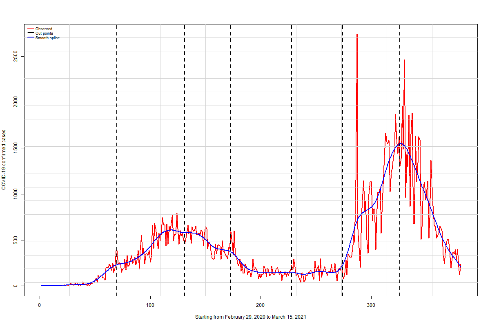
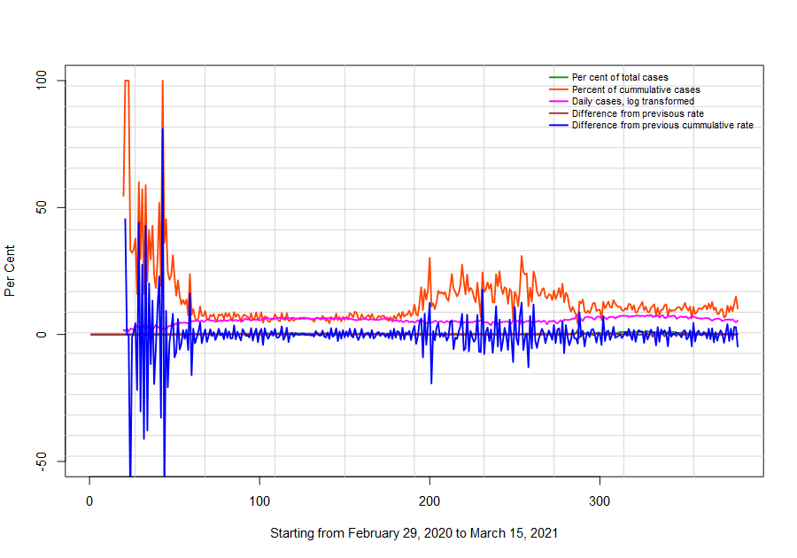
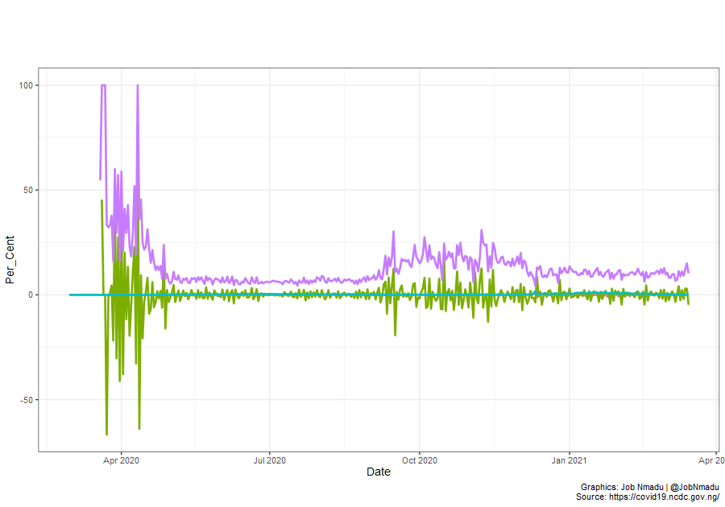
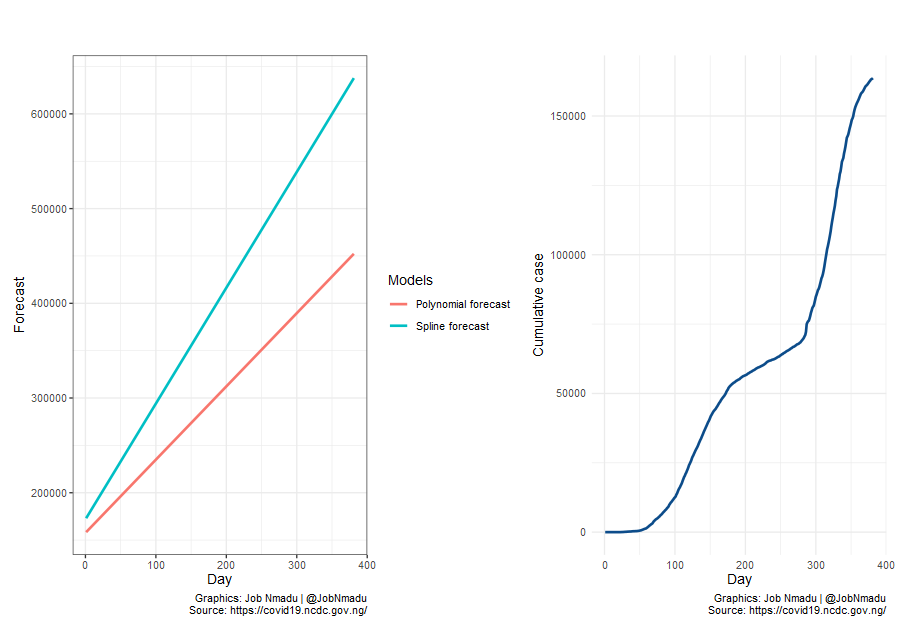

| Model | Confirmed cases | Recoveries | Fatalities | RMSE |
|---|---|---|---|---|
| Smooth Spline | 889,385 | 805,694 | 11,117 | 371 |
| Upper ARIMA | 805,328 | 729,547 | 10,067 | 209 |
| Quadratic Polynomial | 598,274 | 541,977 | 7,478 | 374 |
| Essembled based on summed weight | -70,387 | -63,763 | -880 | 185 |
| Essembled based on weight of fit | -94,320 | -85,444 | -1,179 | 284 |
| Essembled based on weight | -182,959 | -165,743 | -2,287 | 180 |
| Essembled with equal weight | -426,038 | -385,948 | -5,325 | 232 |
| Lower ARIMA | -626,365 | -567,424 | -7,830 | 209 |
| Without knots | -815,453 | -738,719 | -10,193 | 200 |
| With knots | -1,114,856 | -1,009,948 | -13,936 | 187 |



